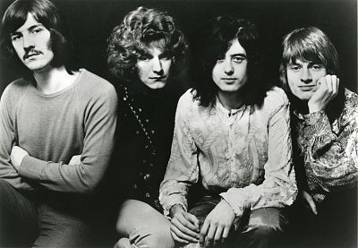

Led Zeppelin fue un grupo britanico de hard rock fundado en 1968 por elguitarrista Jimmy Page, quien habia pertenecido a The Yardbird. La banda estuvo integrada por John Paul Jones com bajista y teclista, al vocalista Ribert Plant y a John Bonham a la bateria.
| Año | Tema | Escuchas |
| 1971 | Stairway to Heaven | 15.236.200 |
| 1969 | Whole lotta love | 12.200.000 |
| 1970 | The Immigrant song | 9.500.000 |
| Datos extraidos de la web de Sptify. | ||
Saber más acerca de Led Zeppelin
Wikipedia